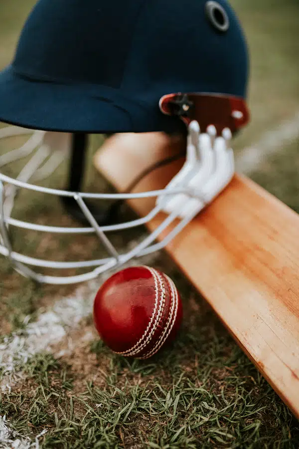
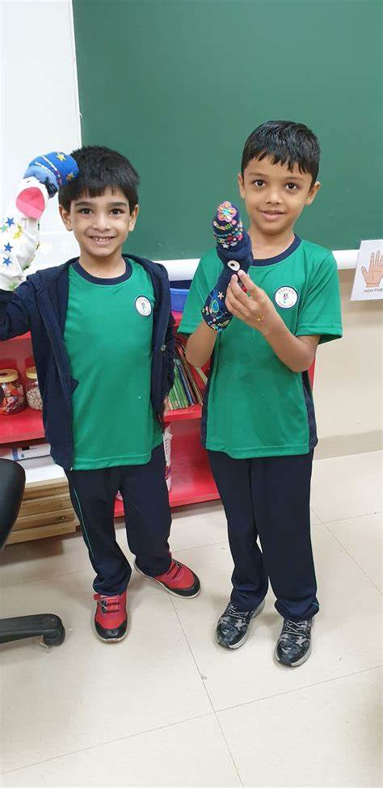

Mission
Chairman's Message
We believe that as human beings we will not merely endure but will also prevail. Because we become immortal through our deeds and we alone possess the power of positive thinking, as within us we have a soul and a spirit capable of compassion and sacrifice.
Whether or not we have children by ourselves, we are parents to the next generation. If we can stop thinking of children as our own and think of them as an asset of the future generation, then we can realize we all have a role to play.
If we want our children to keep their feet on the ground, it is imperative that we nurture them through proper education, inculcate both a moral and social code of behavior to help them live their lives with courage and to respect and revere other fellow human beings.
Irrespective of what socio-economic strata they come from, we believe it is our moral responsibility to go beyond our honorable intensions, dignity and self respect. It is not that they deserve it, but as parents and citizen of a democratic country, we owe it to them.
About Us!
Fazlani Foundation, Aishabai & Haji Abdul Latif Charitable Trust and South Bombay Public Charitable Trust is a Registered Charitable Trust working in the service of humanity for last several years. The major focus of the Trust has been the promotion of education of the weaker sections of the society and also education and medical aid to the needy.
The Trust has been supporting several schools in Mumbai and Maharashtra. Our major contribution in this field is to provide supplementary services to the Education Department of Brihan Mumbai Municipal Corporation (MCGM) and Mumbai.
The Main Aims and Objectives of the Trust are:
1. To raise and promote social, cultural, education and humanitarian standards and help in ameliorate the conditions of down trodden minorities and backward classes; to help the destitute, poor and the needy;
2. To establish and run primary and secondary schools, Colleges of Arts, Commerce, Science, Management and Vocational Training Centres.
3. To establish and run the hostels and boarding for boys and girls to promote good education;
4. To establish health centres, hospitals and also support cases who are in need of medical and surgical help.
5. To provide scholarship and educational assistance to the poor, needy and deserving students.
6. To establish and run library, hostels, high schools, non-formal education classes, adult literacy and coaching classes and also support such classes and schools being run by others for the promotion of education.
Highlights of Activities
a) MCGM School Support Program
The School Support Program has been one of the pet projects of the Trust and it derives a lot of satisfaction from its contribution to the MCGM in bringing about quality education to the students belonging to the under-privileged sections of the society. The objective was to arrest the drop-out rate and increase enrollment so that the socially and economically backward receive education that will help them seek better employment opportunities as compared to being completely illiterate.
In the year 1998, the Aishabai & Haji Abdul Latif Charitable Trust and South Bombay Public Charitable Trusts have focused on the MCGMs School Support Project. The portfolio has increased constantly and it supports schools across Mumbai. These schools provide instruction to students in English, Hindi, Marathi and Urdu languages. Approx. 24,470 students, both boys and girls are enrolled in these schools. The Trust has provided 96 teachers at its own cost to fill in vacant positions to ensure continuity of their education. Apart from providing good quality and motivated teachers, the Trust also ensures their personal and professional growth and development through interventions like Teacher Development Training, providing resources, appointment of a Co-ordinator to take care of administrative work. The teachers conduct extra classes to ensure that students’ performance in examination is good. From 2012-13, the Trust plans to initiate additional activities that will encourage students to pursue their higher education and make a career plan for themselves. In addition, workshops on Personality Development and Character Building are also planned to be conducted. For this purpose, the Trust has appointed 4 Education Counsellors.
In some of these schools, the Trust in collaboration with the Community Development Officer (C.D.O.) has initiated vocational training programs like Tailoring, Embroidery, Fashion Designing, Glass Painting, Mehendi Application, Beautician’s course, Jewellery Designing, Pot Painting, for women and girls. Those enrolled include school students with poor academic performance, drop-outs as well as destitute women, widows, divorcees who can financially support themselves by pursuing these professions. The vocational training programs are being conducted at Meghraj Shethi Marg School, Imamwada and Malad Malwani.
Judging by the response to these programs and its outcome, we plan to expand these activities in other areas of Mumbai. The Trust appreciates the co-operation of the C.D.O. for all their support.
Key Data At A Glance
No. of Schools Sections: 106
No. of Teachers: 104
No. of Students - 24,470
Medium of Instruction under the SSP - Urdu, Hindi, Marathi & English
b) Employment Oriented Professional Vocational Training:
The Trust has established Fazlani Institute of Vocational Training at Crawford Market Musafirkhana wherein boys and girls are provided training in professional vocational courses. At present two batches of Electrician’s Diploma, Motor Winding, and two batches of Air-Conditioner & Refrigerator, Mobile Repairing, MS-CIT, Computer Hardware and Networking Skills are being conducted for boys. The girls receive training in Tailoring and Hotel management. In the previous academic year, 81 students have successfully completed these training. At the Dahisar centre, forty students are undergoing similar training. In collaboration with Saboo Siddik Polytechnic, training program in computer hardware is being conducted in which 40 students are enrolled.
c) Education Scholarships
The Trust provides education aid to students belonging to economically weaker section of the community who have high career aspirations but are not able to support their education cost. Students pursuing higher education – allied fields of Engineering, Medicine, Information Technology and Management were provided these prestigious scholarships. For the academic year 2010-11, 264 meritorious students were provided with these scholarships. These students are doing well in their studies and are competing with some of the best students and putting in all efforts to emerge with flying colours.
d) Medical Aid
Like education, health care too has become very expensive and disease is something that does not distinguish between the rich and the poor – it treats them alike. The Trust considers each case on its merit and provides medical aid to patients who require dialysis, cardiac treatment, and other serious illnesses.
e) Borewells
In the rural areas, provision of potable drinking water is a huge problem. Due to poor monsoon or inaccessibility to water bodies like rivers, the people in these areas face scarcity of water.
To ensure that the rural population has access to ground water, the Trust provides a one-time grant for drilling of borewells and provide much-required relief. A lot of work has been undertaken in this regard in Maharashtra and Gujarat. Funding for more than 300 such borewells has been provided by the Trust, bringing in succor to these water-starved communities.
f) Mobile Medical Van & Telemedicine facility
A fully equipped medical van accompanied by a Medical Doctor and a Nurse, which operate from its base at the Jamila Arif Children’s Village, provides basic primary and curative health care to the satellite villages. The maximum distance covered by the Medical Van is about 48 kms.
For chronic and complicated cases, the patients are referred to expert Doctors in Mumbai through the state-of-the-art Tele-medicine facility linked to one of the leading and reputed hospital in Mumbai.
Copyright © 2011 Fazlani Foundation. All Rights Reserved.
I came second in Art Competion.
Eventhough I came second, I think that I should have come first.
The judges were biased on a person who came first.
It was not like that they had a different view it was clearly biaseness.But overall it was fun
Cricket tournament

I came second in interhouse cricket tournament
I came second in this competion.
It was really fun to play but because of my teammates selfishness we lost.
The game we played was intense but fun.
-
New Uniform

The introduction of a new school uniform brings both anticipation and curiosity.
Students wonder how it will impact their daily routines and overall experience.
The modern design, improved comfort, and functionality of the new uniform are reasons for optimism.
Additionally, the sense of equality and inclusivity it fosters contributes to a stronger school community.
However, individual preferences may still vary, as some students may hold sentimental attachments to the old uniform.
New App

Toddle is a comprehensive teaching and learning platform designed for educators, schools, and families.
Developed by experienced educators, Toddle streamlines various aspects related to the curriculum, making it an essential partner for schools.